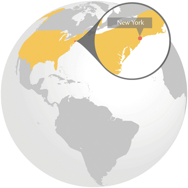
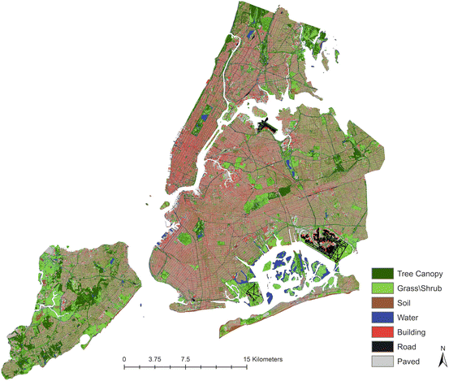
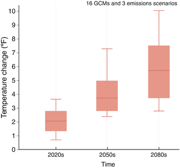
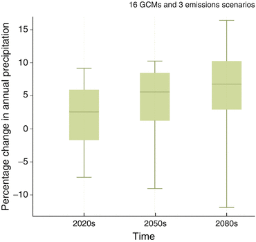
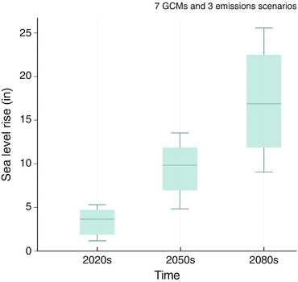
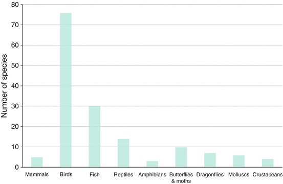
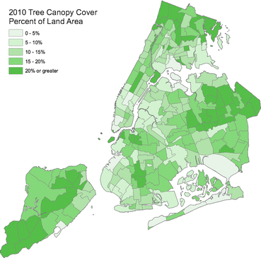
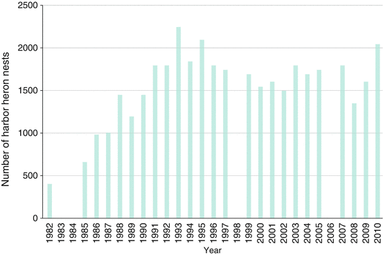
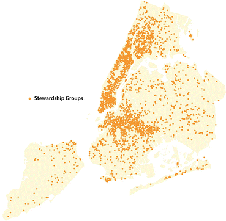

Key Findings
- New York’s population has grown 2.1 % between 2000 and 2010, with an expected increase to nine million residents by 2030
- Urbanization and development continue to put pressure on natural landscapes within the city
- PlaNYC, a long-term economic and environmental sustainability plan covering many aspects of natural resources, will guide urban planning and development for the near future
- Conservation and restoration initiatives include MillionTreesNYC, a plan to plant one million trees in the city, the Green Infrastructure Plan, which will invest over US$2 Billion in green infrastructure improvements, and disaster resilience planning
- In 2012 the Natural Areas Conservancy was established as a public-private partnership to contribute to comprehensive knowledge-based stewardship of New York’s ecological areas.
19.1 Introduction
New York City: History
- Founded in 1624 as “New Amsterdam”
- Renamed New York in 1664
- The population was 230,000 in 1790
- The capital of the United States, 1795–1780
- The world’s first megacity, with a population of ten million in 1950
New York City (NYC) became the world’s first global megacity in 1950 when its population reached ten million (Chandler 1987) and still ranks as one of the world’s largest megacities with 22.2 million people living in the metropolitan region (U.S. Census Bureau 2010). NYC is both a complex social-ecological system and one of the world’s great cultural and economic centers.
NYC’s founding humans have extensively altered the landscape (Sanderson and Brown 2007). The watershed in which NYC exists was almost entirely forested in 1609 with small areas in agricultural cultivation by Native Americans. By 1880, approximately 68 % of the watershed had been converted to farmland, but as soil productivity declined and industry created new jobs, much of cleared land gradually reverted to secondary forest. The local rivers and streams were widely dammed for agriculture, milling, fishing, power, and drinking water.
Inspired by Burnham’s plan for Chicago, the NYC Regional Plan Association created the world’s second urban plan. NYC was an early leader in urban park development in the mid-1800s, including Central Park and Prospect Park, designed by the famous landscape architect, Frederick Law Olmstead. In the 1950s and 1960s, pioneering New Yorkers and others began outlining ways to encourage healthier, cleaner, and more sustainable modes of living. NYC owes its current sustainability vision to the foundations laid by William Whyte’s The Exploding Metropolis, Jane Jacob’s The Death and Life of Great American Cities, and Ian McHarg’s Design with Nature, all of whom used NYC as their laboratory for articulating the goals of livable and sustainable cities (McPhearson 2011).
19.2 The New York City Social-Ecological System
(Note that NYC will refer henceforth to the municipality)
New York City: Population
- 22.2 million residents in the metropolitan area.
- 8.3 million residents within municipal boundaries
- 10,630 residents/km2
- 800 languages spoken
- Regional GNP: US$1.4 trillion
NYC is the most populous and dense city of all U.S. municipalities (Mackun and Wilson 2010). The density of the city is matched by its diversity. 36 % of the city’s population is foreign-born (Lobo and Salvo 2004) and NYC continues to be the leading gateway for immigrants to the U.S. (Monger and Yankay 2011). Over 800 languages are spoken in NYC, the most linguistically diverse city in the world (Roberts 2010). NYC’s continued growth is supported by an energetic economy; the area’s GDP in 2010 was approximately US$1.4 trillion (Greyhill Advisors n.d.), the largest regional economy in the U.S. and the second largest city economy in the world (Hoehn et al. 2009).
NYC lies at the confluence of several waterways that form one of the world’s largest natural harbors, which is used extensively for import and export (Kurlansky 2006). NYC has a humid continental climate and summers are typically hot and humid with a July average of 24.7 °C.
NYC has the most urban parkland of any U.S. city (The Trust for Public Land 2011) (Fig. 19.1) and NYC’s Central Park is the most visited city park in the U.S. (37–38 million visits per year) (Central Park Conservancy 2011), more than seven times as many visits as Grand Canyon National Park.

Fig. 19.1
Land use and land cover in the NYC municipal area showing dense urban development (red) and green space (green) (Data source: University of Vermont Spatial Analysis Laboratory and the New York City Urban Field Station, 2012, New York City Land Cover 2010. Prepared by and published with kind permission of ©Peleg Kremer 2013. All Rights Reserved)
New York City: Area and Parkland
- NYC comprises five boroughs: Manhattan, Brooklyn, Bronx, Queens, Staten Island
- NYC’s total area is 1,215 km2
- 35 % of this area is water
- 11,736 ha of municipal parkland
- 23 km of public beaches
- Central Park in Manhattan covers 357 ha
- Including federal land, NYC has the most urban parkland of any U.S. city
NYC is also one of the greenest cities in the U.S. (Rogers 2011). The relatively small ecological footprint of New Yorkers compared to other American city residents is due primarily to high transit usage and multi-family housing, which is a consequence of NYC’s population density (Owen 2004; Jervey 2006).
19.3 Challenges and Trends
19.3.1 Population Growth, Urbanization and Land Use
NYC’s population grew 2.1 % from 2000 to 2010 (US Census Bureau 2011; Mackun and Wilson 2010). By 2030, the population is expected to increase by another 10 % to over nine million residents (City of New York 2006; PlaNYC 2007). Much of NYC’s urban core is already dense, so intensified urbanization (i.e., land conversion) will present a challenge to maintaining regional biodiversity and ecosystem services (Pirani et al. 2012).
19.3.2 Urban Heat Island Effect, Climate Change and Sea Level Rise
The urban heat island effect (UHI) is a challenge in many cities (U.S. EPA Climate Protection Partnership Division 2008). UHI can be dramatic in NYC, with temperatures in the urban core and the surrounding suburban areas differing by up to 8 °C (Rosenzweig et al. 2009b). Potential future increases in overall regional temperatures combined with heat waves could significantly worsen UHI (Endlicher et al. 2008).
NYC: Predicted 2050 Climate Scenario
- Temperature: +1.7 to 2.8 °C
- Precipitation: +10 %
- Average sea level: +17 to 30 cm
Source: Rosenzweig et al. 2009a
The NYC Panel on Climate Change (NYCPCC) reported that the city is vulnerable to rising sea levels, flooding from increased precipitation, and more extreme weather events. By 2050 it is predicted to be hotter, wetter, have higher average sea level, and experience more frequent and intense coastal flooding, and more frequent and intense heat waves (Figs. 19.2, 19.3, and 19.4) (Rosenzweig et al. 2009a).

Fig. 19.2
Projected temperature changes by 30-year timeslice. The maximum and minimum values across the 16 GCMs and 3 emissions scenarios are shown as black horizontal lines; the central 67 % of values are shown in the shaded areas; the median is the red line (Modified from Rosenzweig et al. 2009a, p. 42, and published with kind permission of ©Rosenzweig 2009a. All Rights Reserved)

Fig. 19.3
Projected precipitation changes by 30-year timeslice. The maximum and minimum values across the 16 GCMs and 3 emissions scenarios are shown as black horizontal lines; the central 67 % of values are shown in the shaded areas; the median is the dark grey line (Modified from Rosenzweig et al. 2009a, p. 44, and published with kind permission of ©Rosenzweig 2009a. All Rights Reserved)

Fig. 19.4
Projected sea level rise changes by 10-year timeslice. The maximum and minimum values across the 7 GCMs and 3 emissions scenarios are shown as black horizontal lines; the central 67 % of values are shown in the shaded areas; the median is the dark grey line (Modified from Rosenzweig et al. 2009a, p. 46, and published with kind permission of ©Rosenzweig 2009a. All Rights Reserved)
Over 100,000 residents of New York live in the 100-year flood zone as currently mapped by the Federal Emergency Management Agency. As the seas rise and storm surges become more common, beaches and bluffs will suffer increased erosion, severe flooding and storm will disrupt public transit, and increased threat of saltwater infiltration into surface waters and aquifers will affect biodiversity (Frumhoff et al. 2007).
19.3.3 Stormwater
Stormwater runoff is a major contributor to water quality degradation in urban areas (NYS Department of Environmental Conservation n.d.). Seventy two percent of NYC’s land area is covered by impervious surfaces (Alamarie et al. 2011). Like many mature cities, much of NYC has a “combined” wastewater treatment system. During heavy precipitation, the storm sewers overflow into the sanitary sewers, mixing stormwater and untreated sewage (combined sewage overflows, or CSOs), releasing them into local waterways.
Rain events as small as 0.15 in. can trigger such events. Each year, more than 27 billion gallons of CSOs are diverted into the harbor (Plumb 2006), causing significant eutrophication (Howarth et al. 2000) and limiting recreation. Management of CSOs is of paramount importance for safeguarding aquatic biodiversity and a wide variety of ecosystem services. Therefore, the City’s Department of Environmental Protection has invested over US$9 billion in reducing CSOs since 2002. PlaNYC, discussed below, is relying heavily on a combination of updated conventional “gray” infrastructure (such as increased capacity at treatment plants) and “green” infrastructure (see Sect. 19.6.1 below) technologies to reduce CSOs.
19.3.4 Air Quality
Health Consequences of Poor Air Quality
- 3,000 deaths
- 2,000 hospital admissions
- 6,000 emergency room visits
Ozone is Responsible for
- 400 deaths
- 800 hospital admissions
- 4,000 emergency room visits for children and adults
Sources: Kheirbek et al. n.d.
In the U.S., the Environmental Protection Agency sets air quality standards and NYC is currently designated as in “moderate nonattainment” for ozone and “nonattainment” for small particulates (PM2.5) (US EPA 2012). The NYC Health Department estimates that reducing current PM2.5 levels by 10 % could significantly reduce deaths and hospitalizations (Kheirbek et al. n.d.).
Local sources of fine particulates account for almost 50 % of the city’s air pollution (Kheirbek et al. n.d.; Johnson et al. 2009). The highest levels are located at convergences of major emission sources, such as high buildings and traffic. Recently, a strategy to combine a phased-in regulatory ban on the dirtiest heating oils plus a financing program to encourage improved boilers in buildings is projected to contribute to a 50 % reduction in CO2 and a 44 % reduction in soot emissions (PlaNYC 2012; Sklerov 2011).
Planting trees is a principal, low-cost tool for addressing air pollution, as well as helping to manage stormwater and mitigate the urban heat island effect. NYC trees remove about 2,200 tons of air pollution per year, valued at US$10 million annually (Nowak et al. 2007). An extensive tree planting effort, MillionTreesNYC, has been underway since 1997 and by mid-2012 was over 50 % complete, with over 600,000 trees planted in parks, along streets, and on private property (see below).
19.3.5 Public Health and Access to Green Space
Lifestyle factors, including physical inactivity and unhealthy diet are the primary contributors to obesity, which is the second major cause of premature death in NYC (NYC Active Design Guidelines 2010). Over 43 % of NYC elementary school children are overweight. Though not addressed directly in most discussions of biodiversity and ecosystem services, there is evidence that access to green space has direct effects on public health (Green Cities, Good Health 2012), and people in communities with abundant green space generally have better health (Harrison et al. 1995). Equity in the distribution of NYC green space is one goal of PlaNYC.
19.3.6 Invasive Species
With one of the busiest international ports in North America, NYC is an epicenter for invasive species in the U.S. (Bustamante and Taylor 2011) and functions as a major pathway for invasive species to the rest of the continent. Nonnative invasive species cause environmental losses and damages in the U.S.: US$120 billion annually (Pimentel et al. 2005). Historically in NYC, after habitat destruction, the biggest threat to local flora has been invasive species. For example, Pelham Bay Park is the largest natural area in the NYC Park system. Over a 50-year period it lost 2.8 native plant species every year, while it gained 4.9 new exotic species (DeCandido 2004).
Effects of invasive species on native populations have increased in New York State over the past several decades and nonnative invasive woody-plant species are rapidly spreading in the New York region, while native species tend to generally be in decline (Clemants and Moore 2005; New York State Invasive Species Task Force 2005). In the Hudson River 33 % of fish species are suspected to be non-native (Strayer 2010).
19.4 Biodiversity and Habitats of NYC
19.4.1 Snapshot of Current Biodiversity in NYC
Snapshot of NYC Biodiversity
- 26 distinct ecological habitat types
- 1,450 plant species native to the five counties of NYC
- 826 native plants still have extant populations
- 140 plants species with some formal designation of rarity
- 220 native species of bees
Source: NYC Department of Parks and Recreation 2006
NYC’s position on the border of New England and the Mid-Atlantic regions results in exceptional biodiversity. The range of habitats, from serpentine grasslands in Staten Island to vernal ponds in Alley Pond Park in Queens is an indication of this variety.
There are 26 distinct habitat types in NYC and 1,450 species of plants are native to the 5 counties of NYC; 57 % (826) of these are currently extant and 20 % are found in more than 5 sites (Ed Toth, 2011). However, 93 % of these species are in decline in the last 100 years, not only because of habitat loss, but because of changing environmental factors such as climate, habitat fragmentation, decreased pollinator availability, UHI, invasive species, and pollution. There are at least 140 formally designated rare animal species found in NYC (Fig. 19.5).

Fig. 19.5
140 formally designated rare species in NYC in their various taxa. Designations include: Federal or State listed Endangered, Threatened, Special Concern, or Species of Greatest Conservation (Prepared by and published with kind permission of ©David Maddox 2013. All Rights Reserved)
Estimated Number of Trees in NYC, as of Late 2012
- Street trees: 593,132
- Families: 19
- Genera: 47
- Species: 206
- Source: NYC Parks 2006 Street Tree Census
- Ca. 2 million trees in landscaped parks
- Total trees in NYC: 5.2 million
- Source: Nowak et al. 2007
- Total canopy cover (2010): 21 % of land area
- Source: NYC Urban Field Station data
- 5,136 acres of forest
- Informal goal for canopy cover in 2030: 30 %
- Source: Urban Tree Canopy Assessment (http://nrs.fs.fed.us/urban/utc/) and NYC Department of Parks and Recreation (personal communication)
19.4.2 NYC’s Urban Forest
Grove et al. (2006) report that tree canopy in NYC is 24 %, although more recent calculations by the City report 21 % (Fig. 19.6). An ambitious public-private partnership called MillionTreesNYC (MTNYC) is underway that will increase the tree canopy to (an informal goal of) 30 % by 2017. Current tree canopy is significantly variable across NYC neighborhoods (Fig. 19.6), and it is the intention of MTNYC to increase equitable access to green spaces across neighborhoods (Locke et al. 2010). Such a tree canopy could reduce surface temperature by a full degree or more (Grove et al. 2006; Rosenzweig et al. 2009b).

Fig. 19.6
2010 Tree canopy cover across NYC as a percent of land area (Reproduced from NYC Department of Parks & Recreation and published with kind permission of ©NYC Department of Parks and Recreation 2010. All Rights Reserved)
Street trees in NYC are valuable stormwater management infrastructure, intercepting almost 900 million gallons of stormwater annually, or an average of 1,500 gal per tree. The total value of this benefit to NYC is more than US$35 million each year (Peper et al. 2007). Urban trees also improve air quality by removing dust and other pollutants, including those that trigger asthma and other respiratory illnesses. A recent study found that higher street tree densities were associated with lower prevalence of asthma among children aged 4–15 in NYC (Lovasi et al. 2008).
Economically, trees provide an important return on the significant investment cities make in their care and planting. In NYC, trees provide approximately US$5.60 in benefits for every dollar spent on tree planting and care, dollars that would otherwise be spent on energy for cooling and stormwater retention services (Peper et al. 2007).
19.4.3 Wetlands in NYC
Facts and Concerns About NYC Wetlands
- In the last 100 years ca.85 % of freshwater and intertidal wetlands in the NYC region have been lost
- Currently there are >1,500 acres of salt marsh
- Currently there are >1,600 acres of freshwater wetlands
- 325 species of bird have been sighted in Jamaica Bay
- Over 100 species of fish occur in Jamaica Bay
- Over 800,000 people live in the communities adjacent to Jamaica Bay
Source: US Fish and Wildlife National Wetland Inventory
The wetlands and riparian systems in NYC vary widely in size, type and condition, and include diverse functions from regionally critical habitat for local and migrating birds and fish to flood management and recreation for human communities. The wetland and riparian system contains approximately 1,500 acres of salt marsh and 1,600 acres of freshwater wetlands: 30 % emergent; 29 % open water; 7 % scrub/shrub; 34 % wet forest (NYSDEC and US Fish and Wildlife National Wetland Inventory).
The largest wetland complexes are found in Jamaica Bay and the Arthur Kill watersheds, where tidal wetlands dominate. The wetlands in the south and eastern sides of Staten Island, part of the Lower Bay watershed, are dominated by freshwater systems.
Roughly 85 % of the coastal wetlands and over 90 % of the freshwater wetlands have been lost in the New York-New Jersey Harbor Estuary over the last century (Regional Plan Association 2002). Hundreds of miles of riparian corridors were developed, headwater streams were filled and piped, and higher order streams were straightened and disconnected from their floodplains through typical urban development. Comparing current stream mapping to historical mapping (Eymund Deigel, personal communication) between 40 and 90 % of streams in NYC have been buried or filled at a proportion approximately equivalent to the impervious area in the landscape. The greatest intact stream length remains in Staten Island, but even there most streams have been extensively modified directly or indirectly.
Since the Clean Water Act the rate of wetlands loss has been dramatically reduced in NYC, as around the U.S. Nevertheless, incremental filling of State unregulated wetlands (wetlands smaller than 12.5 acres) and development in the wetland buffer areas has continued. One analysis comparing current development to the regulated wetlands first mapped by New York State in the 1970s suggests 3–9 % of the wetland area has been filled in Staten Island alone (Eymund Deigel, personal communication, unpublished data). Incremental loss of salt marsh in NYC has also continued due to a variety of on-going environmental stressors and impacts. At seven wetland sites around the city, historic photo analysis from 1974 to 1999 and 2006 show loss rates of 1–2 % of the total salt marsh area per year (NYC Parks and Recreation Natural Resources Group 2010 unpublished data; Hartig et al. 2002). Today, most of the City’s wetlands are smaller than 3 acres in size, an indication of how fragmented NYC wetlands are.
NYC’s largest remaining wetland complexes are found in Jamaica Bay (see below), Staten Island, and the Upper East River and Western Long Island Sound. Northwest Staten Island contains a diverse array of wetland types, including salt and freshwater meadows, spring-fed ponds, forested swamps, creeks, and salt marshes.
After virtually disappearing from the New York Harbor area, “Harbor Herons” (a umbrella term including the great egret, snowy egret, black-crowned night heron, blue heron, and glossy ibis) began to appear again with the improvement in water quality over the last 30 years (Fig. 19.7). More than 100 bird species have been observed nesting or feeding in Arlington Marsh, even though large portions of this site were contaminated by industry and the ecosystem is highly disturbed.

Fig. 19.7
The number of “Harbor Heron” nests in recent surveys (Modified from New York-New Jersey Harbor & Estuary Program (2012), and published with their kind permission. All rights reserved)
Thousands of acres of salt marsh, tidal channels, and mud flats once characterized the Bronx shoreline, on the north side of the Upper East River. Most of these areas were filled by the 1950s. Existing tidal wetlands are concentrated in Pelham Bay Park along Goose Creek Marsh on the Hutchinson River. Most of the remaining freshwater wetlands are found in large parks, including Van Cortland Park in the Bronx and Alley Pond Park and Forest Park in Queens. Staten Island’s Greenbelt Park System and its multiple parks along the south shore contain the largest number and most diverse array of remaining freshwater wetlands in the city.
19.4.4 Jamaica Bay
Jamaica Bay, adjacent to JFK Airport, is a socially and ecologically important coastal ecosystem for the Northeast and also one of the largest and most biologically productive, housing the largest tidal wetlands in the NYC metropolitan area. Over 800,000 people live around the Bay’s margins. It is important habitat for wildlife, with more than 100 species of fish, a number of endangered species (including the peregrine falcon, piping plover, and the Atlantic Ridley sea turtle), and 214 “species of special concern.” More than 325 species of birds have been sighted in the Bay, which serves as an important stopover point on the Atlantic Flyway migration route for nearly 20 % of the birds on the continent (Jamaica Bay Watershed Protection Plan Advisory Committee 2007; U.S. Fish and Wildlife Service 1997).
The most significant threats facing Jamaica Bay are marsh fragmentation and loss resulting from various factors including hardening of the coastline, pollution and CSO inputs, dredging, sea level rise, and the loss of freshwater tributaries.
Aggressive plans exist to upgrade existing wastewater treatment plants; reintroduce native species; and develop green infrastructure in the surrounding areas to help reduce stormwater runoff and storm surge (NYC Department of Environmental Protection 2007, 2010). High-level agreements between U.S. Department of the Interior and the City in 2012 have committed the National Park Service (and by extension other federal agencies) to cooperatively manage public lands and waters, restoration projects, and research in the Jamaica Bay and Rockaway Peninsula areas.
19.4.5 The Big Oyster
Oysters were once an abundant resource of the Hudson River Estuary. In the nineteenth century, there were approximately 907 km2 of oyster reefs in the region (Kurlansky 2006). By the early twentieth century, sediment, water pollution and overharvesting virtually eliminated oysters from NY harbor (Hudson River Foundation et al. 2010). The loss of oysters in the NYC Harbor has not only diminished access to a regional food, but has also resulted in the loss of valuable ecosystem services such as improving water quality and provision of physical habitats for fish and invertebrates (Nelson et al. 2004). Several organizations have been involved in oyster restoration and research, and experimental oyster reefs were seeded in Fall of 2010 throughout the New York Harbor Estuary (Grizzle et al. 2011).
19.5 Organizations and Major Initiatives in Support of Biodiversity and Ecosystem Services
Three broad features of environmental work in NYC are key to its current success in environmental protection. First, there is broad and specific support for environmental goals and action laid out in the Mayor’s comprehensive PlaNYC (2011). Key to the success of this document is that it articulates 132 specific environmental initiatives, including the MillionTreesNYC effort. Other signature efforts include the Green Infrastructure Plan and wetlands assessments and restoration.
PlaNYC publications relevant to biodiversity and habitats; all are available at http://www.nyc.gov/html/planyc2030/html/home/home.shtml
Climate Resilience
- Climate Change Adaptation in NYC
- Climate Risk Information
Waterways and Stormwater
- Green Infrastructure Plan
- Wetlands Strategy
- Wetlands: Regulatory gaps and other threats
- Preliminary survey of wetlands
- Sustainable Stormwater Management Plan 2008
MillionTreesNYC
Second, a diverse constellation of public and private organizations working on various efforts directly or indirectly relating to biodiversity and environmental stewardship, from Federal and City government, to NGOs and university research. For example, StewMap, a project of the U.S. Forest Service and others, created a database of existing organizations whose missions are related to environmental stewardship and demonstrates the intensity of current environmental effort in the city (Fig. 19.8) (Connolly et al. 2012).

Third, organizations in NYC made a concerted effort to be information-driven. Although the connection between data and decision-making is not seamless, great strides have been made to make NYC a place where biodiversity protection and environmental planning can be conducted through adaptive management principles. Several high profile projects and organizations are highlighted below and many others are underway.
19.5.1 PlaNYC 2030
In 2007 NYC Mayor Michael Bloomberg launched PlaNYC (New York City 2007), a set of long-term strategies that will cumulatively make a greener NYC by 2030. PlaNYC is an economic and environmental sustainability plan for New York City with long-term goals in ten policy areas:
1.
Create homes for almost a million more New Yorkers while making housing more affordable and sustainable
2.
Ensure that all New Yorkers live within a 10-min walk of a park
3.
Clean up all contaminated land in New York City
4.
Improve the quality of our waterways to increase opportunities for recreation and restore coastal ecosystems
5.
Ensure the high quality and reliability of our water supply system
6.
Expand sustainable transportation choices and ensure the reliability and high quality of our transportation network
7.
Reduce energy consumption and make our energy systems cleaner and more reliable
8.
Achieve the cleanest air quality of any big U.S. city
9.
Divert 75 % of our solid waste from landfills
10.
Reduce greenhouse gas emissions by more than 30 %
These goals are addressed through 132 specific initiatives ranging from improved bicycle and pedestrian facilities, grants and liability provisions for contaminated land remediation, enhanced waste recycling, to new regulations for energy efficiency in existing buildings. Some of the initiatives specifically address greening and habitat for biodiversity, such as MillionTreesNYC and wetlands projects.
PlaNYC has gained tremendous attention both nationally and internationally, acknowledged around the world as one of the most ambitious – and most pragmatic – sustainability plans anywhere. However, how the plan will impact biodiversity and the provisioning of ecosystem services in the city and region has yet to be comprehensively explored.
The April 2011 update to PlaNYC included for the first time a section focusing specifically on how various PlaNYC initiatives affect “natural systems” (PlaNYC Update April 2011, 166–167). Examples of the initiatives highlighted: expansion of land preservation and use of green infrastructure for stormwater management; modification of building and construction codes to increase stormwater capture; identification of coastal protective measures in the face of climate change; a regulatory and financial program to hasten boiler conversions to use cleaner fuels; and restoration of wetlands.
A majority of PlaNYC initiatives got underway shortly after publication of the plan’s first iteration in 2007, and increasingly are embedded in City policy, practice and even in some cases code or law. Examples of progress include the over 600,000 trees planted, the investments being made in stormwater management and treatment, and the expansion of the parks network.
More about the plan can be found at http://www.nyc.gov/html/planyc2030
.
19.5.2 New York Parks and Recreation Department
The NYC Department of Parks and Recreation (NYC Parks) division of Forestry, Horticulture, and Natural Resources is the agency’s primary environmental and conservation unit. It has a capital budget to build and restore forests, wetlands, and grasslands (having restored over 1,500 acres of these habitats) and create green infrastructure citywide: greenstreets, bioswales, street trees, etc. Their relationship with the U.S. Forest Service, which led to the creation of the NYC Urban Field Station, has engendered relationships with over 60 institutions – academic, non-profit, and other municipal agencies – on research projects that span the region and with studies including bioindicator species, stormwater capture effectiveness, public design innovation, air quality, community stewardship, green roofs, tree mortality, and urban plant genetics. Science, GIS, and land mapping underscore every aspect of the division’s work. Thus, the division views all plantable areas, from rights-of-way to natural areas, as interconnected components of a complex urban transect: every inch is potential space for green infrastructure and ecological engineering.
19.5.3 Greenbelt Native Plant Center
The Greenbelt Native Plant Center (GNPC) uses seed from local native flora to produce plants for ecological restoration work within the region. This effort is now expanding into the Mid-Atlantic Seed Bank, in which the GNPC will be the main conduit for seed collection and banking for restoration work throughout the region.
19.5.4 United States Forest Service Northern Research Station
The Northern Research Station of the U.S. Forest Service (USFS) has made significant and ongoing investments in urban social-ecological research across the U.S. and in several Urban Field Stations. One of these, the NYC Urban Field Station (NYCUFS), was co-founded and is co-managed by the USFS and NYC Parks. The NYCUFS is both a physical space (e.g., a lab, housing for visiting scientists, meeting rooms) and an institution to facilitate collaboration among scientists and practitioners on a variety of significant research on social-ecological systems, biodiversity and natural resource management in NYC. Particular research priorities are urban forestry, environmental literacy, resilience, health and well-being, and environmental governance and civic engagement. For information on the UFS see http://www.nrs.fs.fed.us/nyc/.
19.5.5 Natural Areas Conservancy
The Natural Areas Conservancy’s (NAC) was conceived and developed to expand the work done by the NYC Park’s Natural Resources Group, which has been practicing urban restoration and conservation since 1984. The mission of NAC is to restore, protect, manage and expand NYC Parks’ 10,000 acres of forests, wetlands, and grasslands. Modeled on the Central Park Conservancy, NAC was founded in 2012.
NYC’s natural areas are dispersed in parklands across the five boroughs. Conceptually, administratively, and fiscally, ongoing conservation and management requires looking at NYC’s natural areas not as isolated patches, but as a single unified urban biosphere with an administrative whole. In addition, many of NYC’s natural areas are held by other municipal, state, federal, and private entities, calling for additional channels of coordination and land management.
The NAC will unify the public identity, planning, management, and care of the more than 10,000 acres of natural areas overseen by Parks. The NAC will increase public awareness and volunteerism, and fund necessary research and development towards the implementation of advanced technology and management tools. The NAC has already begun its first signature project, a citywide ecological assessment that will be used in long-term management of the NYC’s natural areas. This project is being conducted in partnership with the American Museum of Natural History, the U.S. Forest Service, The Nature Conservancy, the Wildlife Conservation Society, the Brooklyn Botanic Garden, the NY Heritage Program, and others.
19.5.6 MillionTreesNYC
MillionTreesNYC Accomplishments as of 2012
Planting
- Street trees planted:97,870
- Reforestation trees planted:316,585
- Plantings on other public/private land:197,822
Stewardship
- Number of citizen stewards trained:11,256
- Number of tree care workshops given:971
Programs
- Training Program graduates:104
MillionTreesNYC (MTNYC), a campaign to plant one million trees in NYC by 2017, is one of the most visible and successful initiatives in PlaNYC. To achieve this ambitious goal, NYC Parks allocated US$400 million to the MTNYC campaign over 10 years and developed a public-private partnership with the local non-profit New York Restoration Project (NYRP). Ultimately, NYC plans to add 220,000 street trees, filling every available street tree opportunity, and plant 500,000 park trees. Meanwhile, NYRP is coordinating the planting of 300,000 trees with private organizations, homeowners, and community organizations. MTNYC has planted 612,277 trees as of 2012, over 97,870 of which are street trees.
At the beginning of the campaign, NYC Parks initiated a strategy of full-block planting to rapidly green entire neighborhoods, initially targeting areas with few trees and high asthma rates in a program called Trees for Public Health, that was devised based on NYC Department of Health data showing higher incidences of childhood respiratory ailments in these communities (MillionTreesNYC 2012).
Public, private, and non-profit organizations have used the campaign to build community, encourage people-nature interactions and increase opportunities for civic ecology (Krasny and Tidball 2012) and environmental education in an unprecedented citywide environmental movement. Significant effort has been made in research (McPhearson et al. 2010a, b) and assessment (e.g., mortality studies and the relatively effectiveness of different tree pit designs) to make the MTNYC program as effective as possible.
19.5.7 New York Metropolitan Flora Project
In 1990, the Brooklyn Botanical Garden launched the New York Metropolitan Flora project (NYMF), a multi-year regional effort to document the flora in all counties within a 50-mile radius of New York City, including all of Long Island, southeastern New York State, northern New Jersey and Fairfield County, Connecticut.
19.5.8 NYC Parks and Open Space Access
One goal of PlaNYC is to ensure that every New Yorker lives within a 10-min walk of a park. Currently, more than two million residents are not within this range (PlaNYC 2011). Since 2007, more than 250,000 New Yorkers have gained 10-min walk access to a park, nearly 180 schoolyards to playgrounds sites and 260 green streets have been developed (PlaNYC 2011).
Additionally, since the first Waterfront Plan in 1992 NYC has acquired 506 ha of waterfront as parkland. Wastewater treatment initiatives, including US$6 billion allocation to upgrade the City’s wastewater treatment plants and more than US$1 billion to reduce CSOs, have contributed toward making the city’s waterways cleaner than they have been in a century. The 2010 Waterfront Open Space Plan calls for dozens of redevelopment sites to be completed by 2020 (NYC Comprehensive Waterfront Plan 2011).
19.5.9 Other Organizations Working in NYC
NYC contains a rich network of organizations working in areas relates to biodiversity, stewardship, and civic engagement. StewMap documents these organizations and makes them accessible through a searchable database (Connolly et al. 2012).
19.6 Biodiversity Protection Through Natural Areas Planning and Regulations
There are many regulations and programs in NYC aimed at conserving biodiverse natural areas, including development permitting mechanisms, land management by governmental entities, species data collection and environmental education. These efforts, which are particularly focused on waterfront, wetland and rare plant communities, involve cooperation among federal, state, local and nonprofit organizations.
19.6.1 Green Infrastructure Plan
NYC has adopted a sustainable infrastructure investment approach that addresses multiple goals by using “blue roofs,” larger street tree pits, “green streets,” porous concrete, and vacant lots to control stormwater and provide additional ecosystem services (Cohen and Ackerman 2010; McPhearson et al. 2012a, b). The plan (NYC Green Infrastructure Plan 2010), which has committed a total of US$2.4 billion over 20 years, is designed to control 10 % of stormwater runoff using green infrastructure over 20 years and is estimated to reduce CSOs by approximately 1.5 billion gallons per year (Alamarie et al. 2011). The Staten Island Bluebelt, one of the largest watershed-level stormwater management systems in the U.S. (4,856 ha of waterways and wetlands), is evidence of the importance of urban green infrastructure. The Bluebelt has proved to have 40 % removal efficiencies for nitrates and has saved the City more than US$80 million in comparison to traditional sewer construction (Gumb et al. 2008).
19.6.2 Waterfront Revitalization Program
Since 2002, City, State and Federal partners have invested over US$56 million at 16 sites to restore 59 ha of wetland. Sixteen restoration projects involving 50 ha are expected to be completed by 2013 (NYC Office of Long-Term Planning and Sustainability 2012). Additionally, the Waterfront Revitalization Program (WRP) designates Special Natural Waterfront Areas (SNWA), requiring that particular habitat features be considered in connection with development in these areas. Three SNWAs have recently been designed including Northwest Staten Island Harbor Herons Area, Jamaica Bay, and East River Long Island Sound. WRP calls for the City to prevent the net loss of wetlands. A 2012 revision of WRP to offer greater protection by designating additional sites of ecological importance is expected to be voted on by the City Planning Commission and City Council by late 2012 or early 2013, and would then be subjected to state and federal review before going into effect in 2013 or 2014.
19.6.3 Special Natural Area District
In 1975, the Special Natural Area District (SNAD) was created to improve preservation of natural features in parts of Staten Island, the Bronx and Queens. In order to guide development in a way that preserves unique natural features, the Planning Commission must review new developments and site alterations on primarily vacant land to ensure that significant natural features are preserved (NYC Department of City Planning 2012).
19.7 Recommendations for Biodiversity Management and Protection in NYC
19.7.1 Inventory and Assess Natural Areas in NYC
Knowledge of the current distribution, abundance, and status of current biodiversity and natural areas is fundamental to any protection. The new Natural Areas Conservancy (see above) has urban biodiversity inventory as part of its mission for land held by the city. A preliminary wetlands assessment has been conducted as part of PlaNYC. It is hoped that other organizations, including large conservation NGOs, will also invest in such work. Planned efforts by the National Park Service around Jamaica Bay include long-term monitoring.
19.7.2 Manage and Restore Natural Areas
The NYC Department of Parks and Recreation is actively involved in restoration of forest habitats and intertidal zones. The National Park Service and others are engaged in restoration of wetland habitats, for example in Jamaica Bay. However, land conversion is still a significant threat in NYC, including in NYC parks, where there is persistent and legitimate demand for additional recreation facilities. All natural areas would benefit from comprehensive management plans that guide restoration work and inform managers of the consequences of land conversion for biodiversity and ecosystem services.
19.7.3 More Research in the Potential for Green Infrastructure to Support Biodiversity
Trade-offs and synergies between biodiversity and ecosystem services need to be better explored in urban planning, research and modeling to provide best practices for maximizing the biodiversity potential.
19.7.4 Promote Native Species and Manage Against Invasive Species
Requiring the use of native species and locally adapted varieties in all city planting and restoration efforts would benefit local ecosystems. MillionTreesNYC, for the most part, plants native species. Other programs are needed to promote the use of native species in green infrastructure programs such as Green Streets. Increasing the capacity of the Greenbelt Native Plant Nursery to provide additional native plant material for green infrastructure is one avenue for achieving this.
19.7.5 Aggressively Promote Equitability in the Distribution and Access to Natural Areas and Biodiversity
The current distribution of green spaces, parks, and biodiversity is uneven across the city. Remedying this fact is a core goal of PlaNYC. Additional analysis of the full suite of ecosystem services provided by green infrastructure combined with an increased understanding of the public need for a wide variety of ecosystem services provided at the neighborhood level would help to prioritize green space development in underserved areas of the city (McPhearson et al. 2012a, b).
19.7.6 Engage Citizens and Promote Ecological Literacy
Connecting residents with urban nature is critical for developing nature awareness and students would benefit from increased opportunities in schools and communities to learn about nature in their backyards. This includes curriculum development, teacher trainings, and community programs to increase people-nature interactions and improve ecological literacy.
19.8 Conclusion
Planning a more sustainable and resilient NYC in the face of multiple social, economic, and environmental pressures requires an integrated social-ecological approach to urban research, planning, policymaking, and management, and biodiversity protection in particular. NYC has taken a significant step in this direction with PlaNYC, the environmental and economic sustainability plan for 2030. Major investments in green infrastructure, tree planting in target areas, ecological restoration, and habitat protection for biodiversity have helped make NYC a model global green city. Many organizations contribute to work now done in NYC, including federal and city agencies, non-profits, and community organizations working in research, planning, and stewardship. However, with nearly a million new residents expected within the city boundaries by 2030, and even more in the metropolitan region, there is still progress to be made in linking social planning with ecological planning across scales from neighborhoods to the region.
The Green Infrastructure Plan for NYC is one of the many strong examples of how NYC has focused on ecosystems as a resource for positive change within the city. The plan focuses primarily on stormwater absorption, but also represents a unique opportunity for NYC to substantially expand its already robust network of urban farms and gardens and transform vacant land into spaces that provide increased habitat for biodiversity, while developing corridors to improve connectivity among fragmented urban nature patches. The New York Metropolitan Region has historically harbored incredible biodiversity and, even with significant development, still retains strong ecological resources for ecosystem services. Open space protection in the region has proceeded aggressively in recent years especially driven by the Open Space Institute in collaboration with city and state governments, communities, farmers, and NGOs.
Ecosystems and the biodiversity in them provide critical ecosystem services to human inhabitants of NYC by supplying food, drinking water, wood and fiber, flood control, air purification, stormwater absorption, carbon sequestration and storage, temperature regulation, noise mitigation, aesthetic and recreational value, education opportunities, and a sense of well-being (for a complete review of NYC ecosystem services see CBO Scientific Assessment Chap. 4, this volume). Therefore, the human components of the NYC social-ecological system are intimately tied to the ecological components of the city and the region. Trade-offs and synergies in the provisioning of ecosystem services need to be better explored in urban planning and scenario modeling to provide best practices for maximizing the biodiversity and ecosystem services in the NYC metropolitan region. The progress NYC has made in this regard in recent years is significant, with strong plans in place and powerful motivation among community groups and city agencies to continue building the necessary improvements to the socio-ecology of the New York regional system.
References
Alamarie, K., Cohn, A., Larry dela Cruz, J., Donnelly, H., Eckels, M., Farag, M., Garcia, K., et al. (2011). NYC Green Infrastructure Plan: A sustainable strategy for clean waterways (pp. 1–154). New York: New York City Department of Environmental Protection.
Bustamante, C., & Taylor, J. (2011). New York City: The nation’s ground zero for invasive species. In EcoNYC. http://econyc.journalism.cuny.edu/2011/05/20/new-york-city-the-nations-ground-zero-for-invasive-species. Accessed 30 May 2012.
Chandler, T. (1987). Four thousand years of urban growth: An historical census. Lewiston: St. David’s University Press.
City of New York. (2006). New York City population projections by age//sex and borough (pp. 1–26). New York: City of New York.
Clemants, S. E., & Moore, G. (2005). The changing flora of the New York metropolitan region. Urban Habitats, 3(1), 192–210.
Cohen, N., & Ackerman, K. (2011, November). Breaking new ground. The New York Times.
Connolly, J., Svendsen, E., Cambell, L., & Fisher, D. (2012). Organizing urban ecosystem services through environmental stewardship governance in New York City. Landscape and Urban Planning, 109, 76–84.CrossRef
DeCandido, R. (2004). Recent changes in plant species diversity in urban Pelham Bay Park, 1947–1998. Biological Conservation, 120, 129–136.CrossRef
Endlicher, W., Jendritzky, G., Fischer, J., & Redlich, J. (2008). Heat waves, urban climate and human health. In J. M. Marzluff, C. Simon, C. ZumBrunnen, G. Rayan, A. Bradley, M. Alberti, W. Endlicher, et al. (Eds.), Urban ecology: An international perspective on the interaction between humans and nature (1st ed., pp. 269–278). New York: Springer.
Frumhoff, P., McCarthy, J., Melillo, J., Moser, S., & Wuebbles, D. (2007). Confronting climate change in the US Northeast: Science, impacts, and solutions. In US Northeast: Science (pp. 1–160). http://www.cabdirect.org/abstracts/20083177506.html. Accessed 6 Oct 2012.
Green Cities, Green Health, University of Washington. (2012). What are the benefits of nature in cities and towns? http://depts.washington.edu/hhwb/Top_Introduction.html. Accessed on 6 Oct 2012.
Greyhill Advisors. (n.d.). GDP by Metro: MetroGDP. http://greyhill.com/gross-metropolitan-product. Accessed 30 May 2012.
Grizzle, R., Ward, K., Lodge, J., Mosher-Smith, K., Kalchmayr, K., & Malinowski, P. (2011). Oyster Restoration Research Project (ORRP) technical report (pp. 1–20). New York.
Grove, J. M., O’Neil-Dunne, J., Pelletier, K., Nowak, D., Walton, J., et al. (2006). A report on New York City’s present and possible urban tree canopy. New York: Parks and Recreation.
Gumb, D., Garin, J., Mehrotra, S., et al. (2008). Watershed approach to integrating green and hard infrastructure: New York City’s Staten Island Bluebelt. In Proceedings of the water. http://www.ingentaconnect.com/content/wef/wefproc/2008/00002008/00000006/art00065. Accessed 15 Oct 2012.
Harrison, C., Burgess, J., Millward, A., Dawe, G., et al. (1995). Accessible natural greenspace in towns and cities: A review of appropriate size and distance criteria (English Nature Research Reports, No. 153). Peterborough: English Nature.
Hartig, E. K., Gornitz, V., Kolker, A., Mushacke, F., & Fallon, D. (2002). Anthropogenic and climate change impacts on salt marshes of Jamaica Bay, New York City. Wetlands, 22(1), 71–89.CrossRef
Hoehn, T., Hawksworth, J., Tiwari, A., et al. (2009). UK Economic Outlook (pp. 1–40). http://www.ukmediacentre.pwc.com/imagelibrary/downloadMedia.ashx?MediaDetailsID=1567. Accessed 5 Oct 2012.
Howarth, R. W., Anderson, D., Cloern, J., Elfring, C., Hopkinson, C., Lapointe, B., Malone, T., Marcus, N., McGlathery, K., Sharpley, A., & Walker, D. (2000). Nutrient pollution of coastal rivers, bays, and seas. Issues in Ecology, 7, 1–15.
Hudson River Foundation, NY/NJ Baykeeper, U.S Army Corps of Engineers, Port Authority of New York/New Jersey, The Urban Assembly New York Harbor School, The Harbor Foundation Governors Island Preservation and Education Corporation, Hudson River Park Trust, NY/NJ Harbor Estuary Program, NY City Parks Department, et al. (2010). Oyster restoration feasibility study: Project summary (pp. 1–8), New York.
Jamaica Bay Watershed Protection Plan Advisory Committee. (2007). Planning for Jamaica Bay’s future: Final recommendations on the Jamaica Bay Watershed Protection Plan (pp. 1–75). New York: New York City Department of Environmental Protection.
Jervey, B. (2006). The big green apple: Your guide to eco-friendly living in New York City. Guilford: Insiders’ Guide.
Johnson, S., Pezeshki, G., Jacobson, J. B., Freed, A., Werbe-Fuentes, J., Haviland-Markowitz, J., et al. (2009). The New York City Community Air Survey: Results from year one monitoring 2008–2009. New York: New York City
Kheirbek, I., Wheeler, K., Walters, S., Pezeshki, G., Kass, D., et al. (n.d.). Air pollution and the health of New Yorkers: The impact of fine particles and Ozone. In Environmental protection. New York: New York City.
Krasny, M. E., & Tidball, K. G. (2012). Civic ecology: A pathway for earth stewardship in cities. Frontiers in Ecology and the Environment, 10(5), 267–273.CrossRef
Kurlansky, M. (2006). The big oyster: History on the half shell. New York: Ballantine Books.
Lobo, A., & Salvo, J. J. (2004). The newest New Yorkers 2000 (pp. 1–44). New York: New York City Department of City Planning.
Locke, D., Grove, J. M., Lu, J., Troy, A., O’Neil-Dunne, J., & Beck, B. (2010) Prioritizing preferable locations for increasing urban tree canopy in New York City. Cities and the Environment, 3(1), 18 p.
Mackun, P., & Wilson, S. (2010). Population distribution and change: 2000 to 2010. Population English Edition (pp. 1–12). Washington, DC: US Census Bureau.
McPhearson, T. (2011). Toward a sustainable New York City: Greening through urban forest restoration. In M. Slavin (Ed.), Sustainability in America’s Cities: Creating the green metropolis (pp. 181–204). Washington, DC: Island Press.CrossRef
McPhearson, T., Feller, M., Felson, A., Karty, R., Lu. J, Palmer, M., & Wenskus, T. (2010a). Assessing the effects of the urban forest restoration effort of MillionTrees: NYC on the structure and functioning of New York City ecosystems. Cities and the Environment 3(1): Article 7.
McPhearson, T., Felson, A., Karty, R., & Palmer, M. I. (2010b). Urban forest restoration: Assessing effects on the structure and function of New York City ecosystems. Paper presented at the Society for Conservation Biology annual meeting, Edmonton.
McPhearson, T., Kremer, P., & Hamstead, Z. (2012a). Non-economic ecosystem services stacking in the social-ecological system of New York City. Paper presented at the Planet Under Pressure Conference, London.
McPhearson, T., Kremer, P., & Hamstead, Z. (2012b). Non-economic ecosystem services assessment of urban land in the New York City social-ecological system. Paper presented at the 4th EcoSummit Meeting: Restoring the Planet’s Ecosystem Services, Columbus, OH.
MillionTreesNYC. (2012). Getting to a Million Trees: Target neighborhoods. http://www.milliontreesnyc.org/html/million_trees/neighborhoods.html. Accessed 7 Jun 2012.
Monger, R., & Yankay, J. (2011). U. S. Legal Permanent Residents: 2011 (Vol. 000, pp. 1–6). Washington, DC. http://www.dhs.gov/xlibrary/assets/statistics/publications/lpr_fr_2011.pdf. Accessed 5 Oct 2012.
Nelson, K. A., Leonard, L. A., Posey, M. H., Alphin, T. D., & Mallin, M. A. (2004). Using transplanted oyster (Crassostrea virginica) beds to improve water quality in small tidal creeks: A pilot study. Journal of Experimental Marine Biology and Ecology, 298(2), 347–368.CrossRef
New York-New Jersey Habor & Estuary Program. (2012). The State of the Estuary 2012: Environmental health and trends of the New York-New Jersey Harbor Estuary. Lowell: New England Interstate Water Pollution Control Commission. www.harboresturary.org
Nowak, D. J., Hoehn, R. E., Crane, D. E., Stevens, J. C., & Walton, J. T. (2007). Assessing urban forest effects and values, New York City’s urban forest (Resource Bulletin NRS-9). Newtown Square.
NYC Active Design Guidelines. (2010). Active design guidelines: Promoting physical activity and health in design. New York.
NYC Comprehensive Waterfront Plan. (2011). Vision 2020: New York City comprehensive waterfront plan. New York.
NYC Department of City Planning. (2012). Special natural area district rezoning. New York.
NYS Department of Environmental Conservation. (2012). Top 10 water quality issues in NYS. http://www.dec.ny.gov/chemical/69240.html. Accessed 28 May 2012.
NYC Department of Environmental Protection. (2007). Jamaica Bay Watershed Protection Plan (Vol. I). New York.
NYC Department of Environmental Protection. (2010). Jamaica bay watershed protection plan update 2010 (pp. 1–50). New York: New York City.
NYC Department of Parks and Recreation. (2006). Street Tree Census. New York.
NYC Green Infrastructure Plan. (2010). NYC green infrastructure plan: A sustainable strategy for clean waterways. New York
NYC NY-NJ Harbor Estuary Regional Plan Association. (2002). New York.
NYC Office of Long Term Planning and Sustainability. (2012). New York.
NYS Invasive Species Task Force. (2005). Final report of the New York State invasive species task force (pp. 1–13)
Owen, D. (2004, October). Green Manhattan. The New Yorker, New York.
Peper, P., et al. (2007). New York City, New York municipal forest resource analysis. Center for Urban Forest Research, USDA Forest Service, Pacific Southwest Research Station. http://www.fs.fed.us/psw/programs/uesd/uep/products/2/psw_cufr687_NYC_MFRA.pdf. Accessed 15 Oct 2012.
Pimentel, D., Zuniga, R., & Morrison, D. (2005). Update on the environmental and economic costs associated with alien-invasive species in the United States. Ecological Economics: The Journal of the International Society for Ecological Economics, 52(3), 273, Amsterdam/New York: Elsevier.
Pirani, R., Freudenberg, R., & Winters, P. (2012). Landscapes: Improving conservation practice in the Northeast Megaregion. New York: Regional Plan Association/America 2050.
PlaNYC. (2007). A greener, greater New York (pp. 1–156). New York.
PlaNYC. (2011). PlaNYC: Update April 2011 (pp. 1–202). New York.
PlaNYC. (2012). PlaNYC: Progress report 2012 (pp. 1–52). New York.
Plumb, M. (2006). Sustainable raindrops: Cleaning New York Harbor by greening the urban landscape (pp. 1–40).
Roberts, S. (2008, May 22). It’s still a big city, just not quite so big. The New York Times, New York.
Roberts, S. (2010, April 28). Listening to (and saving) The World’s Languages. The New York Times, New York. Accessed on 27 Aug 2012. http://www.nytimes.com/2010/04/29/nyregion/29lost.html?_r=1andhpw
Rogers, S. (2011, October 26). Hard economic times be damned: 10 cities make their own green. EcoSalon. Retrieved from http://ecosalon.com/americas-greenest-cities-319/
Rosenzweig, C., Solecki, W., Blake, R., Bowman, M., Castaldi, A., Faris, C., Gornitz, V., et al. (2009a). Climate risk information: New York City Panel On Climate Change (pp. 1–74). New York: City of New York.
Rosenzweig, C., Solecki, W. D., Cox, J., Hodges, S., Parshall, L., Lynn, B., Goldberg, R., et al. (2009b). Mitigating New York City’s Heat Island: Integrating stakeholder perspectives and scientific evaluation. Bulletin of the American Meteorological Society, 90(9), 1297–1312.
Sanderson, E. W., & Brown, M. (2007). Mannahatta: An ecological first look at the Manhattan landscape prior to Henry Hudson. Northeastern Naturalist, 14(4), 545–570.CrossRef
Sklerov, F. (2011). Department of Environmental Protection and Department of Buildings Unveil New Program to streamline approval process for upgrading boilers [Press Release]. New York. Accessed on http://www.nyc.gov/html/dep/html/press_releases/11-39pr.shtml
Stewardship Mapping and Assessment Project. (2007). New York City. USDA Forest Service.
Strayer, D. L. (2010). Alien species in fresh waters: ecological effects, interactions with other stressors, and prospects for the future. Freshwater Biology, 55(s1), 152–174. Blackwell Publishing.
Svendsen, E. S., & Campbell, L. K. (2008). Urban ecological stewardship: Understanding the structure, function and network of community-based urban land management. Cities and the Environment, 1(1), 1–32.
Svendsen, E. S., Campbell, L. K., & Fisher, D. (2007). Stewardship Mapping and Assessment Project. USDA Forest Service.
The Trust for Public Land. (2011). 2011 City Park Facts (pp. 1–36). San Francisco. http://cloud.tpl.org/pubs/ccpe-city-park-facts-2011.pdf. Accessed on 5 Oct 2012
U.S. Census Bureau. (2010). Population and Housing Occupancy Status: 2010 – United States – Combined Statistical Area; and for Puerto Rico 2010 Census National Summary File of Redistricting Data (pp. 1–3). http://factfinder2.census.gov/rest/dnldController/deliver?_ts=356856293050. Accessed on 5 Oct 2012.
U.S. Fish and Wildlife Service. (1997). Significant habitats and habitat complexes of the New York bight watershed. Accessed on 15 Oct 2012. http://library.fws.gov/pubs5/begin.htm
US Census Bureau. (2011). Population estimates. Datasets for all geographies. http://www.census.gov/popest/data/datasets.html. Accessed on 5 Oct 2012.
US EPA. (2012). Currently designated nonattainment areas for all criteria pollutants. Green Book. http://www.epa.gov/oaqps001/greenbk/ancl.html. Accessed on 15 Oct 2012.
US EPA: Climate Protection Partnership Division. (2008). Reducing urban heat islands: compendium of strategies. In K. Hogan, J. Rosenberg, & A. Denny (Eds.), Urban heat island basics. Washington, DC: Climate Protection Partnership Division, U.S. Environmental Protection Agency.